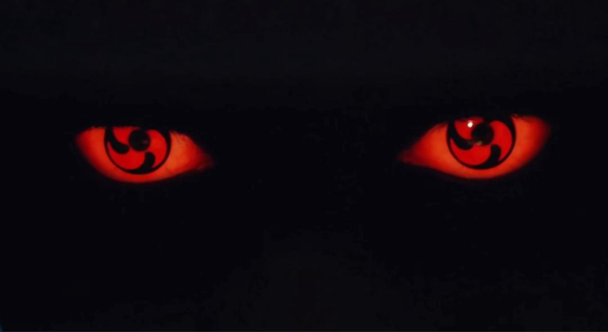
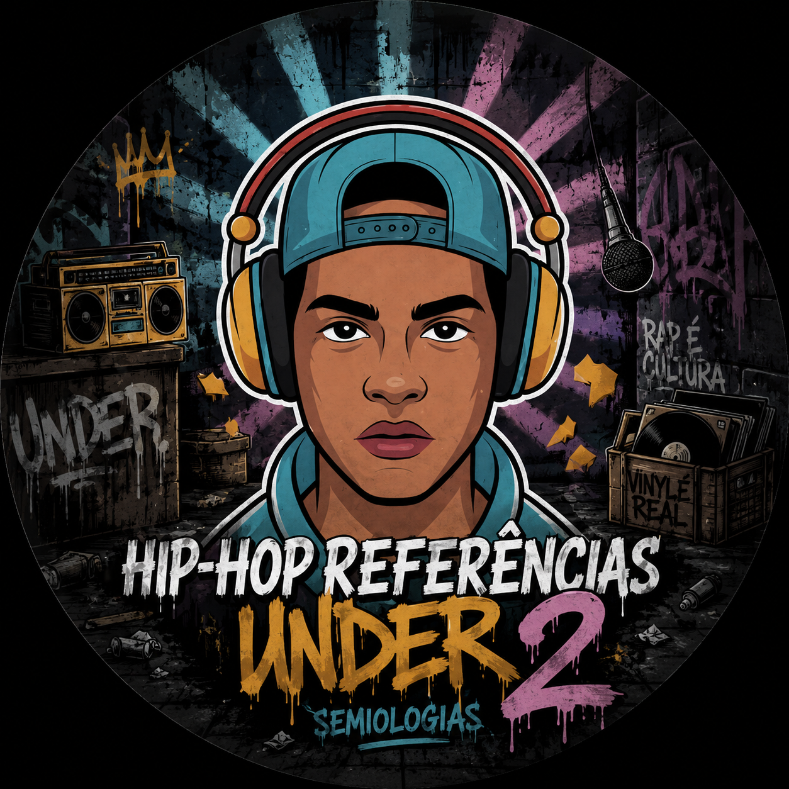
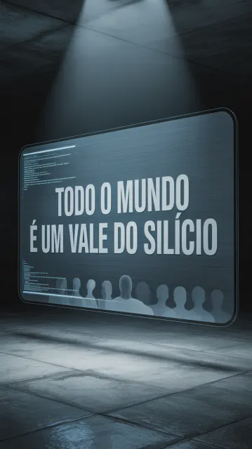
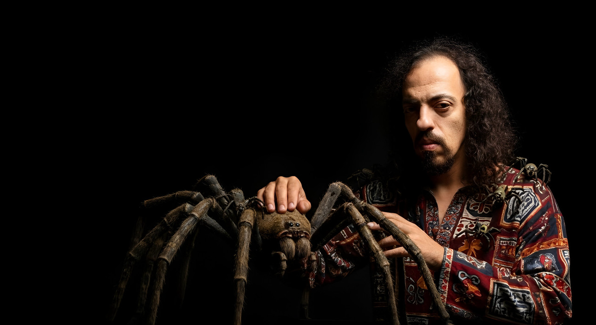
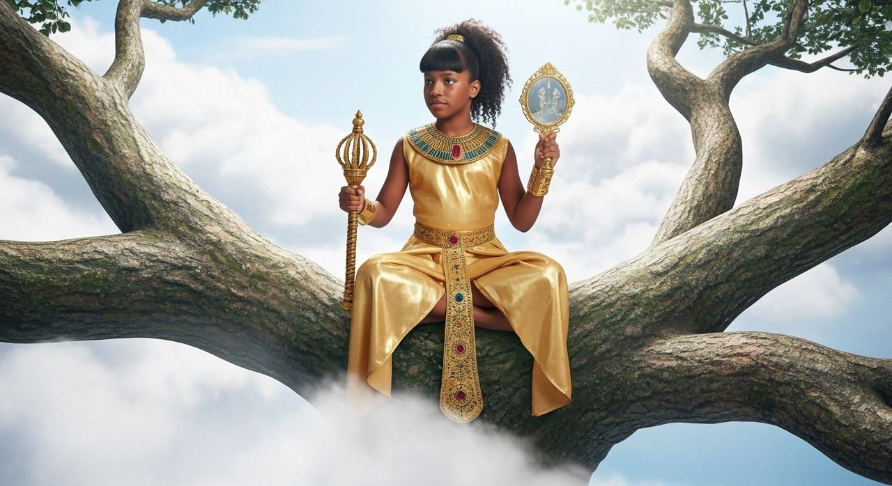
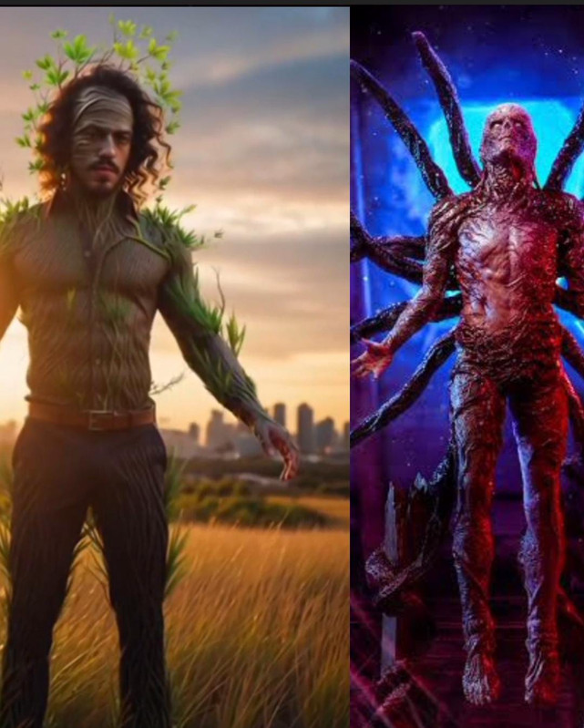

O Arquiteto do Colapso: Gui Cariolatto e o Xeque-Mate no Sistema
Em um mundo à beira da falência material e espiritual, Gui Cariolatto relança a profética 'Fim do Sistema Monetário'. Uma análise visceral sobre o colapso financeiro e a arte como resistência.

O artista desconhecido que inspirou quase o mundo todo nos últimos 3 anos.
Veja os vídeos de semelhanças de grandes nomes atuais com Gui Cariolatto.

Mixando a Vida na Arte Deluxe Edition - O Mesmo Voo Porém com Mais Amplitude
Um mergulho profundo na obra monumental de 15 anos de Gui Cariolatto. Com 28 faixas, o álbum é uma jornada de resistência artística e espiritualidade que já alcançou milhares.

Artista denuncia o Vale do Silício 2.0: o controle tecnológico e a corrupção artística
Gui Cariolatto escancara o 'roubo de autoria' e a corrupção no Vale do Silício 2.0. Uma crítica contundente ao uso frio da tecnologia para apagar a fonte da arte independente.

Gui Cariolatto: Das Teias da Visão ao Surrealismo Musical - Sua fixação por aranhas
Do ritual asteca ao encontro com entidades simbólicas: como Gui Cariolatto transmutou traumas e visões em uma estética surrealista única. A aranha como arquétipo de criação.

Sobre o Natural - Educa Som: A Nova Joia Audiovisual que Redefine a Arte
Uma colaboração emocionante entre pai e filha. 'Sobre o Natural' é um manifesto audiovisual que une permacultura, cura global e protesto contra a tortura animal.

A continuação real de Stranger Things: O Arquiteto da Ressonância
A sincronicidade cósmica entre Hawkins e a mente de Gui Cariolatto. Descubra como o projeto Ressonância se conecta ao Mundo Invertido e ao despertar da consciência.